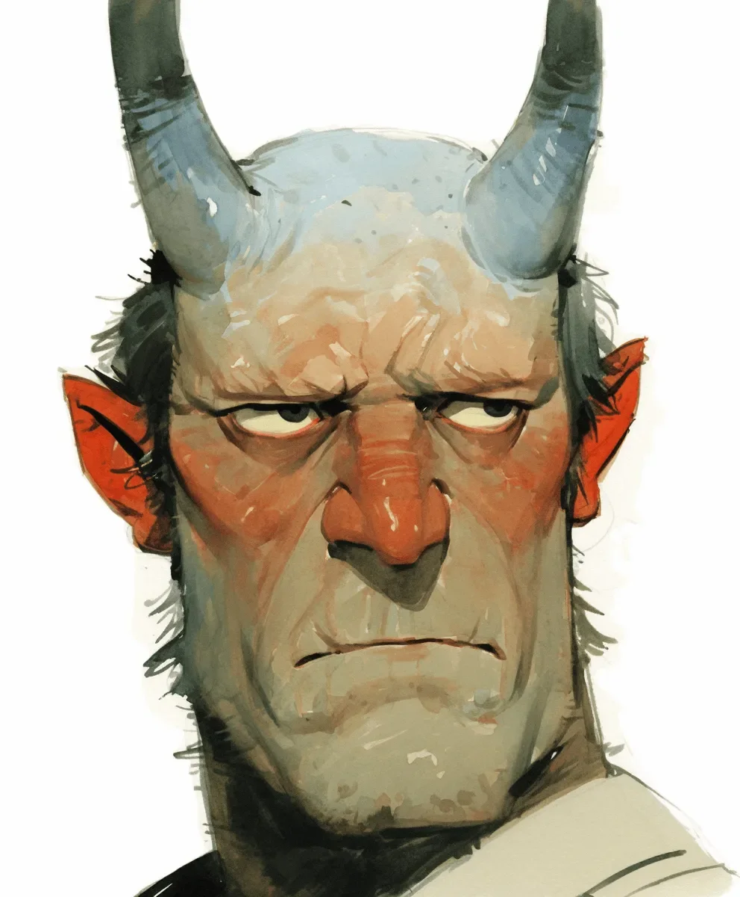

그래. 몸 기울이지 말고. 손짓도 하지 말고. 네 파멸이 될 게 분명한 저 낮게 달린 샹들리에에 부딪히고 싶지 않다면, 머리에서 솟아난 두 개의 건축학적 골칫덩어리를 잊지 마. 이것이 주문이자, 재앙을 막기 위한 기도문이었다.
[Right. Don’t lean. Don’t gesture. Don't, by the low-hanging chandelier that will surely be your doom, forget the two architectural liabilities erupting from your skull. This was the mantra, the litany against disaster.]
어이없을 정도로 작은 테이블 건너편에서 그녀가 미소 짓고 있었다. 조작된 긴급 전화를 받기 직전에 짓는 그런 억지스럽고 예의 바른 미소가 아니라, 진심 어린 미소였다. 그녀는 와인을 흔들며 말했다. "그래서, 이름은 있어요?"
[Across the ridiculously small table, she was smiling. A genuine smile, not the tight, polite kind that usually preceded a fabricated emergency phone call. “So,” she said, swirling her wine, “do they have names?”]
이름? 내 불행을 설계한 이 쌍둥이 건축가들에게? 보증금 세 개와 근사한 중절모를 가질 기회를 앗아간 이 한 쌍의 공성퇴들에게 말인가? "아니요." 나는 겨우 대답했다. 그 한마디는 마치 돌조각처럼 목구멍에서 튀어나왔다. "그냥… 그냥 그것들이에요." 그냥 그것들이라고? 공황에 빠진 내 머리가 쥐어짤 수 있는 가장 창의적인 표현이 고작 이거라니. 차라리 연하장 문구나 쓰러 가야겠다.
[Names? For the twin architects of my misery? The dual battering rams that had cost me three security deposits and any chance of owning a decent fedora? “No,” I managed, the word escaping my throat like a shard of rock. “They’re… just them.” Just them? The single most creative phrase my panic-addled brain could produce. I should write for greeting cards.]
그녀는 눈가에 주름을 지으며 말했다. "마음에 드네요. 절제미가 있어요." 그녀가 몸을 앞으로 숙이자 촛불 빛에 그녀의 눈동자가 금빛으로 반짝였다. 그 위험한 순간, 나는 그 눈이 언제든 일어나 자리를 뜰 수 있는 사람에게 붙어 있다는 사실을 잊고 있었다. "그것들에 대해 다른 사람은 아무도 모르는 걸 말해줘요."
[“I like that,” she said, her eyes crinkling. “Understated.” She leaned forward, and the candlelight found flecks of gold in her eyes. For a dangerous second, I forgot they were attached to a person who could still get up and leave. “Tell me something no one else knows about them.”]
나는 평소처럼 그녀의 호기심이 병적인 관심으로 변질될 것에 대비했다. 나는 안전하고 현실적인 고충을 털어놓기로 했다. "후드티요. 못 입어요. 그리고 옆으로 누워 자려면 30분 동안 베개를 쌓아야 하는데, 그게 꼭 현대미술 조각품 같아요."
[I braced for the usual curiosity to curdle into morbid fascination. I opted for a safe, practical misery. “Hoodies,” I said. “Can’t wear them. And sleeping on my side is a thirty-minute arrangement of pillows that looks like a modernist sculpture.”]
그녀의 웃음은 예의상 킥킥거리는 소리가 아니라, 내 지긋지긋한 이명보다 더 깊게 울리는, 진심에서 우러나온 목젖이 떨리는 웃음이었다. 오늘 밤 처음으로, 귀까지 바짝 올라가 있던 어깨의 긴장이 풀렸다. 재앙을 막기 위한 내면의 기도문이 지지직거리며 사라졌다. 나도 모르게 두 손이 허공으로 솟구쳤다. 순수하고 무의식적인 동지애의 표시로, 손바닥을 활짝 편 채.
[Her laugh wasn't a polite titter, but a genuine, throaty laugh that resonated deeper than my usual tinnitus. For the first time all night, my shoulders unlocked from their high-guard position around my ears. The internal litany against disaster dissolved into static. I felt my hands fly up, palms open, a gesture of pure, unthinking camaraderie.]
"맞아요! 그게 다..."
[“Exactly! It’s all about the…”]
팅.
[Clink.]
날카롭고 확실한 충격이 뼛속까지 파고들었다. 고개를 들어보니, 오른쪽 뿔 끝이 섬세한 구리빛 조명을 건드리고 있었다. 조명은 이제 저녁의 마지막 순간을 향해 똑딱이는 작은 메트로놈처럼 흔들리고 있었다. 왼쪽으로, 오른쪽으로 흔들렸다. 그러다 내가 임종의 순간에도 들을 것만 같은 애처로운 '팅' 소리와 함께, 에디슨 전구가 저절로 돌아가며 빠져버렸다.
[A jolt, sharp and absolute, shot through my marrow. I looked up. The tip of my right horn had nudged the delicate, copper-shaded light fixture. It was now swinging, a tiny metronome counting down the final beats of the evening. It swayed left, it swayed right. Then, with a pathetic little tink I will hear on my deathbed, the Edison bulb unscrewed itself.]
전구는 완벽하게, 영화처럼 느린 화면으로 떨어졌다. 마치 호박색 눈물방울이 그녀의 진홍빛 와인잔 속으로 뛰어드는 것 같았다. 희미한 '퐁-치이익' 소리와 함께. 보라색 얼룩이 그녀의 하얀 실크 셔츠 위로 피어올랐다.
[It fell in perfect, cinematic slow motion, an amber teardrop plunging into the deep red of her wine glass with a faint plink-fzzzzt. A plume of purple erupted onto her white silk shirt.]
정적이 내려앉았다. 평화로운 고요함이 아니라, 테이블 주변의 빛마저 휘게 만드는 듯한 밀도 높고 압축된 진공 상태였다. 그녀는 움직이지 않았다. 번져나가는 얼룩에 시선을 고정한 채, 입을 살짝 벌리고 있었다. 나는 그녀의 표정에서 무언가 스치는 것을 보았다. 분노가 아니라, 순수하고 완전한, 믿을 수 없다는 표정이었다. 바로 이거였다. 돌이킬 수 없는 순간. 나만의 힌덴부르크 참사였다.
[Silence descended. Not a peaceful quiet, but a dense, pressurized vacuum that seemed to bend the light around the table. She didn't move. Her eyes were fixed on the blossoming stain, her mouth slightly agape. I saw a flicker of something in her expression—not anger, but pure, unadulterated disbelief. This was it. The point of no return. My own personal Hindenburg.]
그때, 그녀의 입꼬리 한쪽이 씰룩이며 올라갔다. 거대한 감정의 지각 변동을 알리는 작은 신호였다. 그것은 미소가 아니었다. 마침내 터져 나온 그 웃음, 그 멋지고 거침없는 소리의 전주곡이었다.
[Then, one corner of her mouth hitched upward, a tiny signal of seismic shift. It wasn't a smile; it was the prelude to the laugh that finally broke free, that same wonderful, uninhibited sound.]
평소라면 열일곱 가지 다른 종류의 공포로 불이 켜진 교환대 같았을 내 뇌의 모든 회선이 순간 딱 끊어졌다.
[My brain, usually a switchboard alight with seventeen different kinds of panic, had every line go dead at once.]
그녀는 냅킨에서 칵테일 포크를 꺼내 조심스럽게 꺼진 전구를 건져냈고, 기묘한 트로피처럼 테이블 위에 올려놓았다. 그녀는 얼룩지고 김이 나는 잔을 들어 올렸다.
[She fished a cocktail fork from the napkin, carefully retrieved the dead bulb, and placed it on the table like a strange trophy. She raised her stained, fizzing glass.]
"음," 그녀가 와인에 젖은 테이블에서 반사되는 빛을 눈에 담으며 말했다. "이렇게 말 그대로 '전구가 번쩍하는 순간'으로 끝나는 데이트는 처음이네요."
[“Well,” she said, her eyes catching the reflected light from the wine-soaked table. “I’ve never had a date end with a literal lightbulb moment before.”]
오늘 밤 처음으로, 머릿속이 완전히 텅 비었다. 나는 그저 마주 웃어 보일 뿐이었다.
[For the first time all night, my head was completely empty. I just smiled back.]